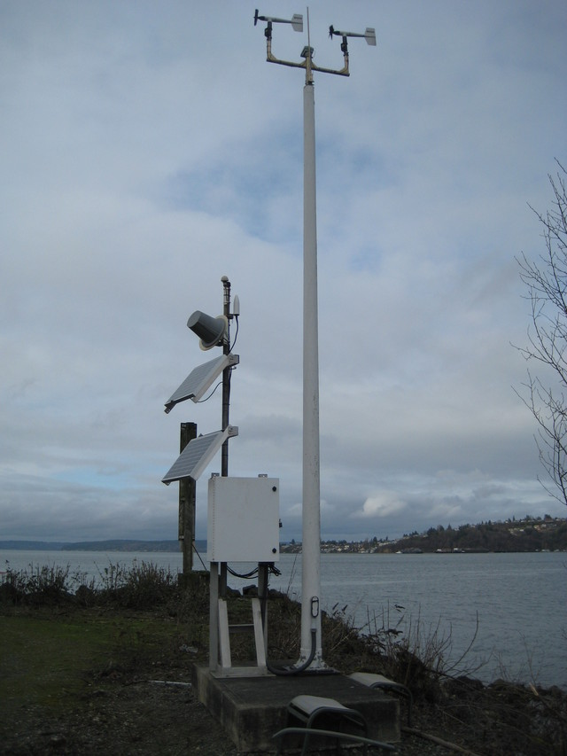

if ("tidyverse" %in% rownames(installed.packages()) == 'FALSE') install.packages('tidyverse')Environmental Landscape of an Intertidal Heat Wave
Using NOAA National Data Buoy Center (NDBC) to map air and water temperatures in Commencement Bay, Tacoma, WA, during the June 2021 Puget Sound heat wave
I searched the NDBC map for the stations closest to my collection site at Owens Beach, Point Defiance Park in Commencement Bay, Tacoma.
I found the following stations:
Station TCMW1 9446482 Tacoma, Met, WA - air temp

Historical data: https://www.ndbc.noaa.gov/station_history.php?station=tcmw1
Station TCNW1 9446484 Tacoma, WA - water temp - tide height

Historical Data: https://www.ndbc.noaa.gov/station_history.php?station=tcnw1
Install Packages
Load packages
library(tidyverse)# make a data directory, if there isn't one already (-p option will make one only if it isn't already there, otherwise it will do nothing)
mkdir -p dataUse curl to get NDBC data
Pull data from the year 2021 in which the June record-breaking heat wave occurred…
# navigate to data directory
cd data
# download 2021 data from station TCNW1 NDBC into the data directory
# this station has water temp in F
curl -O https://www.ndbc.noaa.gov/data/historical/stdmet/tcnw1h2021.txt.gz
# download 2021 data from station TCMW1 NDBC into the data directory
# this station has air temp in FCitation
BibTeX citation:
@online{tanja,
author = {Tanja, Sarah},
title = {Environmental {Landscape} of an {Intertidal} {Heat} {Wave}},
date = {},
langid = {en}
}
For attribution, please cite this work as:
Tanja, Sarah. n.d. “Environmental Landscape of an Intertidal Heat
Wave.”